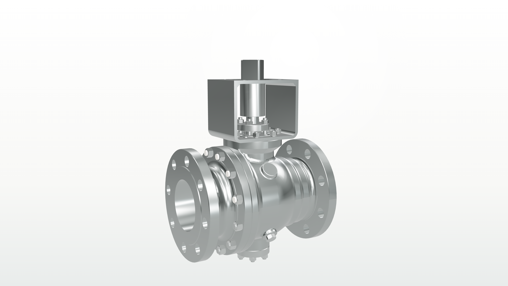
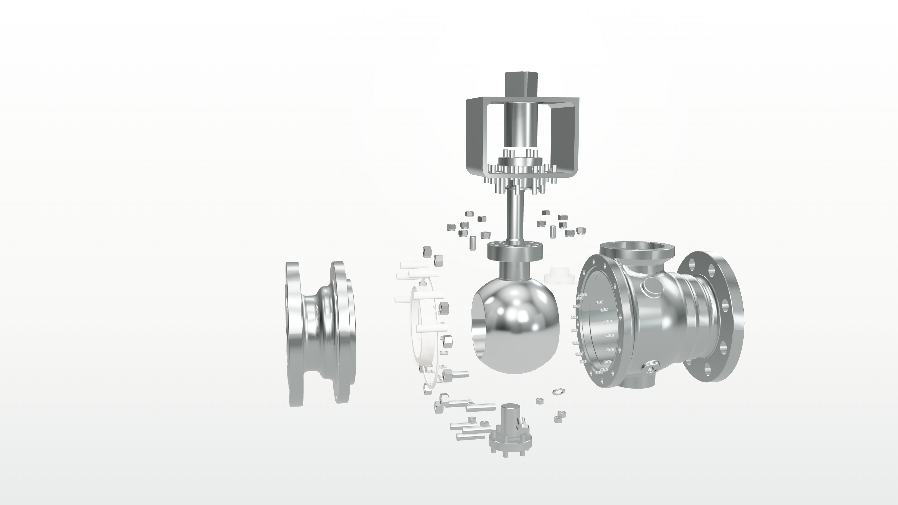
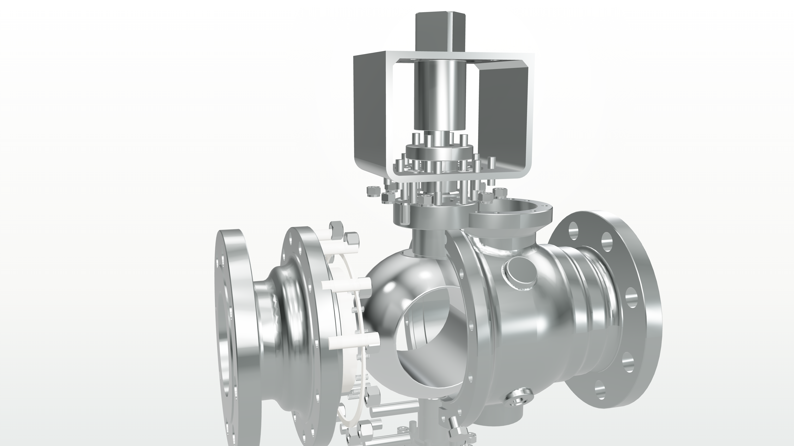

assembled
完整产品状态，用于开场或终帧；所有主要零件回到基准位置。
exploded
图册式爆炸状态，左右轴向、上驱动、下支撑、大尺度但方向明确。
ball-open
球体 90 度开启状态；阀座和密封圈不跟随球芯旋转。
ball-closed
与开启状态成对的关闭参考，方便后续做四分之一转动画。
Goal 16 / stainless catalogue render states
这一版纠正 Goal 15 的黑色外壳方向：阀体、阀盖、法兰和外壳统一回到高调不锈钢图册质感； 球芯更抛光，阀座/密封圈改为浅色软密封视觉，并定义 assembled、exploded、ball-open、ball-closed 四个后续动画可复用状态。



完整产品状态，用于开场或终帧；所有主要零件回到基准位置。
图册式爆炸状态，左右轴向、上驱动、下支撑、大尺度但方向明确。
球体 90 度开启状态；阀座和密封圈不跟随球芯旋转。
与开启状态成对的关闭参考，方便后续做四分之一转动画。